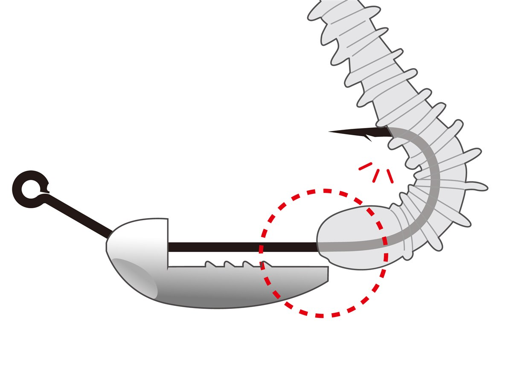

宵姫ステルスグライド
（宵姫 STEALTH GLIDE）
宵姫ステルスグライド（宵姫 STEALTH GLIDE）はがまかつ（LUXXE）のアジング用ジグヘッドです。
アジングの第一人者・藤原真一郎がたどり着いた「群れを散らさず、静かに沈む」アプローチを、誰でも再現できるように作られた新型ジグヘッド。フォール中に回転せず、静かに真下へ沈むので、警戒心の強い大型アジやメバルの群れに自然になじむのが最大の魅力です。

画像出典:がまかつ公式HP
スペック
- メーカー
- gamakatsu（がまかつ）
- タイプ
- ジグヘッド（アジング用・ロングワーム対応）
- 開発者
- 藤原真一郎
- 重さ
- 0.6g・0.8g・1.0g・1.5g・2.0g・2.5g
- フック
- #2（太軸）
- 入数
- 4本
- 仕上げ
- ナノアルファ
- ターゲット
- アジ・メバル・カマス・ロックフィッシュ
- 価格
- 495円（税込）
- 発売
- 2026年
▼今すぐチェック
宵姫ステルスグライドの特徴
「回転せず、静かに直下へ沈む」群れを散らさないためのジグヘッド
-
回転せず静かに沈むフォール姿勢
シンカーをシャンクの背中側に配置した独特の形で、フォール中にワームが回転しにくい。静かに真下へ沈むので、群れの中にリグを入れても魚を散らしにくい。
-
ロングレッグアイで飛行姿勢が安定
アイを上に長く伸ばした「ロングレッグアイ」構造で、キャスト時の姿勢が安定して飛距離が出る。軽いウエイトでも広い範囲を探れ、風がある日もボトムまで届けやすい。
-
ロングワームを一発でまっすぐセット
接地面の突起がワームを傷つけずにズレを防ぐホールド構造。セットが難しいロングワームも、まっすぐ隙間なく刺せる。大型アジを意識した太軸の#2フックで、貫通と防錆に優れたナノアルファ仕上げ。
宵姫ステルスグライドの使い方
ワームをまっすぐ刺したらキャストし、狙いのレンジまでカウントダウン。基本はリフト&フォールで、フォール中はジグヘッドが静かに真下へ沈む時間をしっかり取るのがコツです。
アジの群れの位置が分かったら、群れの上から落とし込むイメージで同じコースを通します。0.6〜2.5gの6ウエイトがあるので、風や水深に合わせて「なんとか沈められる軽さ」を選ぶと、違和感を与えずに食わせられます。
宵姫ステルスグライドの得意な状況
常夜灯まわりや潮通しのいい堤防で、アジの群れは見えているのにすぐ散ってしまう・スレてしまうという状況が最大の出番。
ロングワームのシルエットで大型アジや大型メバルを狙いたい時、カマスやロックフィッシュを静かなフォールで誘いたい時にも使えます。
群れを散らさずに同じポイントを攻め続けられるので、大型アジが釣れる時間を長く保てるジグヘッドです。
ワンポイント
ワームの先端が下の図の位置にきた時に鈎先を出すと、まっすぐ隙間なくセットできます。接地面の突起がワームをしっかり押さえるので、ズレにくく、ワームも傷みにくいです。
3インチクラスのロングワーム（鰺道ワーム ゼロレジストなど）と組み合わせると、このジグヘッドの静かなフォールを活かしやすくなります。

画像出典:がまかつ公式HP
▼今すぐチェック
宵姫ステルスグライドに似ているルアー
-
 スモウヘッド
ブリーデン
詳細はこちら＞
スモウヘッド
ブリーデン
詳細はこちら＞
アジ・メバル用のジグヘッド。亜鉛製の低重心ヘッドで、スローフォールとボトムでの自立を重視するならこちら。
-
 鰺道ワーム ゼロレジスト
メジャークラフト
詳細はこちら＞
鰺道ワーム ゼロレジスト
メジャークラフト
詳細はこちら＞
吸い込みバイトに特化した3インチワーム。ロングワーム対応のステルスグライドに合わせたい1本。